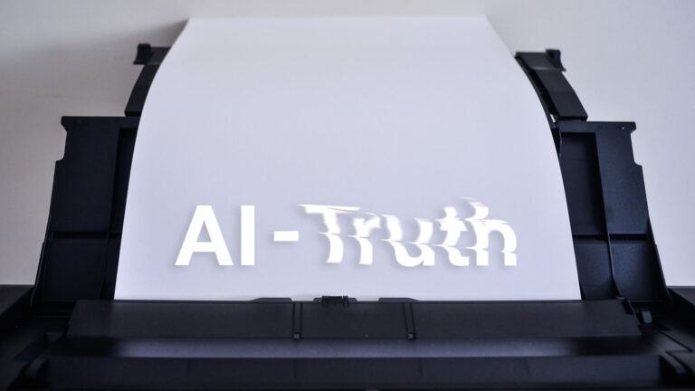
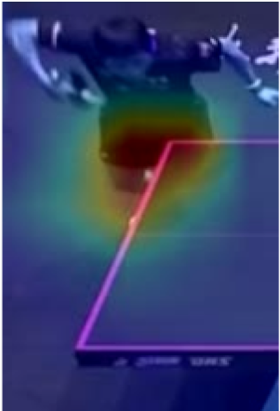
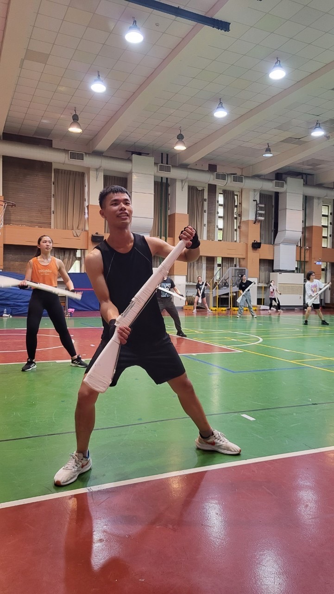
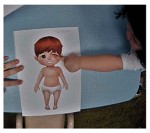
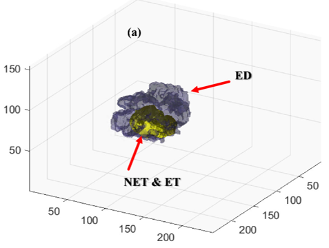
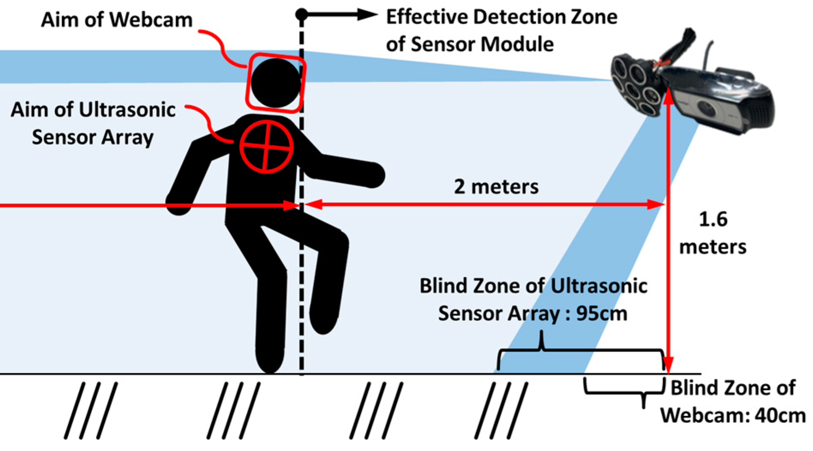
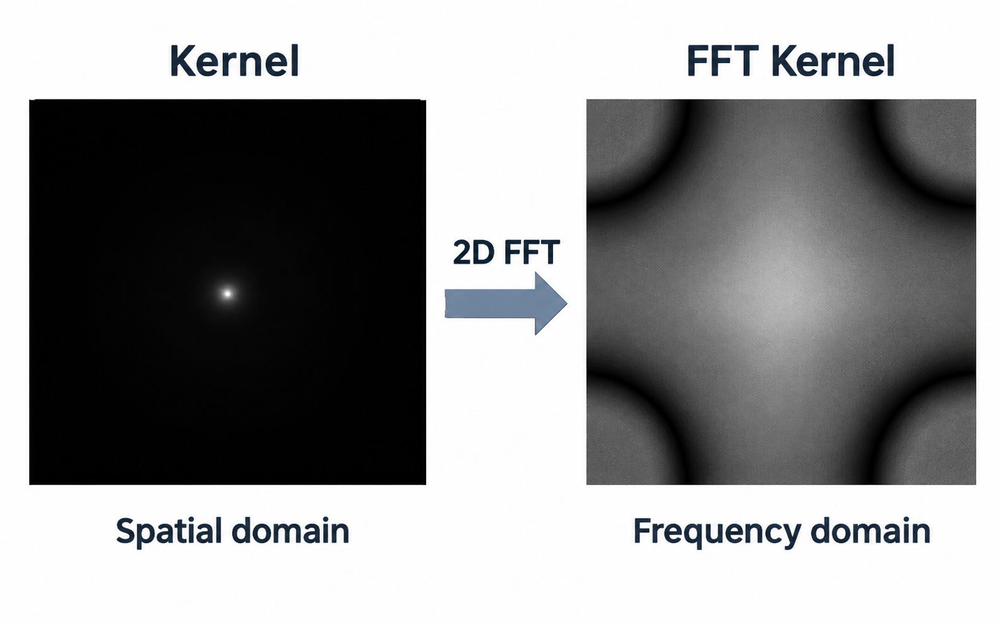

Ph.D. Candidate
National Tsing Hua University
Institute of Information Systems and Applications · MISLab
Video understanding and computer vision, with a focus on fine-grained temporal action detection.
GPA: 4.16 / 4.3
Ph.D. Candidate at National Tsing Hua University
Video Understanding · Computer Vision · Sports Analytics
#VideoUnderstanding #ComputerVision #SportsAnalytics #ActionRecognition
I am a Ph.D. candidate at the Institute of Information Systems and Applications, National Tsing Hua University, and a member of MISLab, advised by Professor Min-Chun Hu. My research focuses on video understanding and computer vision, particularly fine-grained temporal action detection and table tennis stroke recognition. I also work on medical image segmentation and multi-sensor fall detection. Beyond research, I co-created From Post-Truth to AI-Truth, presented at the Ars Electronica Festival 2023 Campus Exhibition in Linz, Austria.
Leacius Chang

I love using my expertise in AI to create tech art that blends creativity with advanced technology. Through tools like AI and computer science, I design interactive pieces that engage audiences and offer them a deeper understanding of AI.

I enjoy exploring the intricate details between athletes. Deep learning in sports analysis deciphers player movements, strategies, and game events, enhancing training and real-time insights to boost performance and engage fans.

I'm passionate about color guard, with experience in numerous festivals and international competitions. In marching bands, color guard enhances visual impact, transforming from a supportive role into a dance-like performance art that uniquely entertains audiences.
Background
National Tsing Hua University
Institute of Information Systems and Applications · MISLab
Video understanding and computer vision, with a focus on fine-grained temporal action detection.
GPA: 4.16 / 4.3
National Central University
Department of Biomedical Sciences and Engineering · BioMIL Lab
Medical image segmentation and fall detection using multi-sensor fusion techniques.
GPA: 4.05 / 4.3 · Rank: 2 / 20
Applied Research
Built an automated pipeline for table tennis stroke segmentation and classification, with per-stroke segmentation and pre-annotation of 30-minute videos in 16 minutes. The system is undergoing real-world testing and iterative refinement.
Over 80% accuracy · 28 stroke classes

Developed a cognitive assessment module using a homography-based deep learning algorithm to detect children’s self-touch behaviors involving the eyes, nose, and mouth.
Over 70% accuracy

Accelerated DDFT-based medical image segmentation through Fast Fourier Transform optimization.
1,000× faster segmentation

Collected and analyzed multimodal sensor data using CSRT tracking, DDFT, and Gaussian mixture modeling for non-contact elderly fall detection.
Over 90% accuracy

Enhanced DDFT-based segmentation through quantum-mechanics-based modeling.
3% improvement over baseline
Research Output
Sharing Knowledge
Taught action recognition fundamentals to high school students.
Delivered technical training on Vision-Language Models and Hugging Face.
Supported AI learning activities at National Tsing Hua University.
Supported a class of over 80 students at National Tsing Hua University.
Supported a class of over 80 students at National Tsing Hua University.